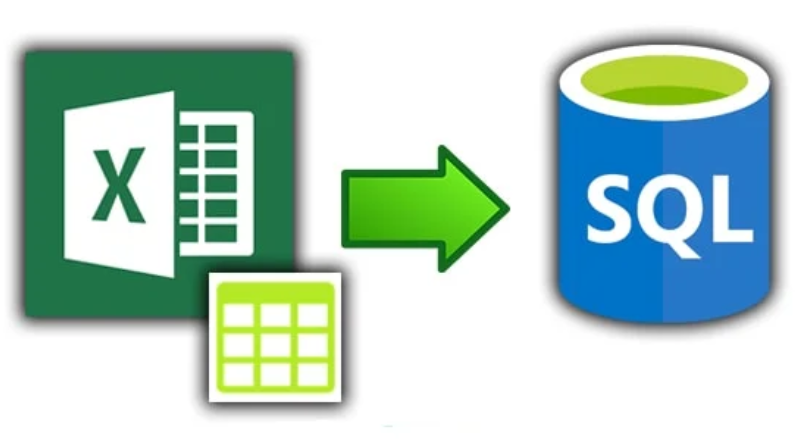
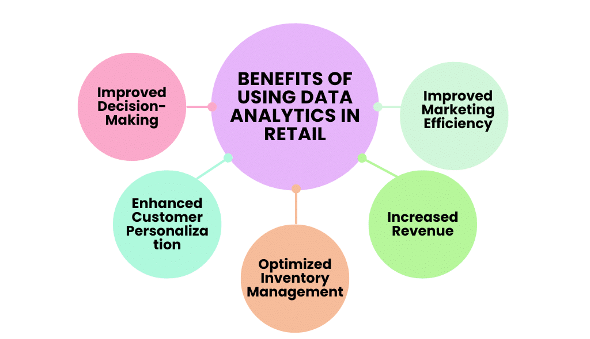
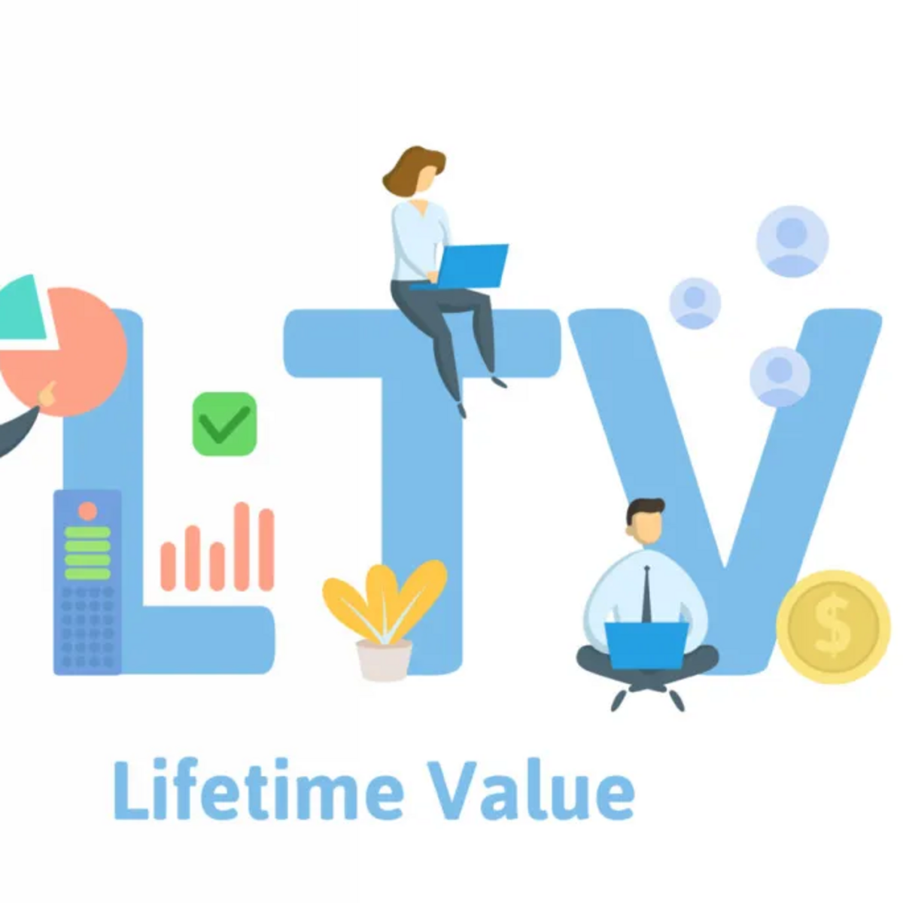
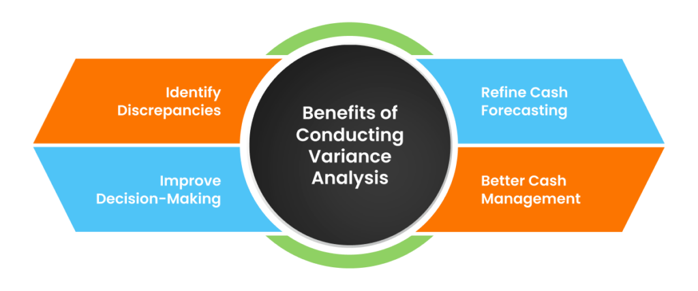
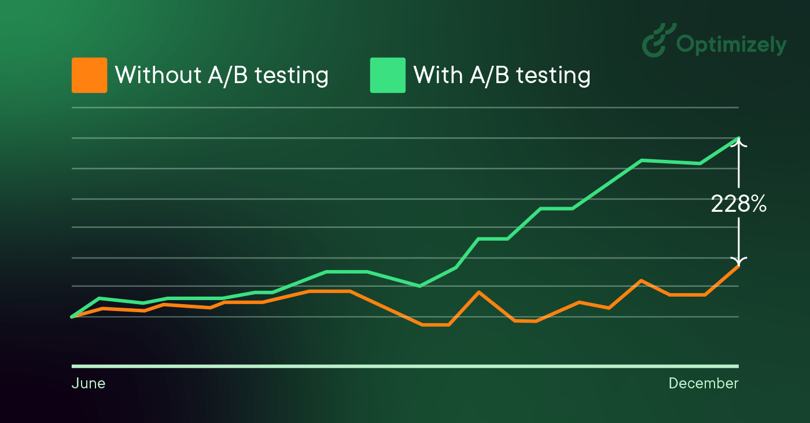
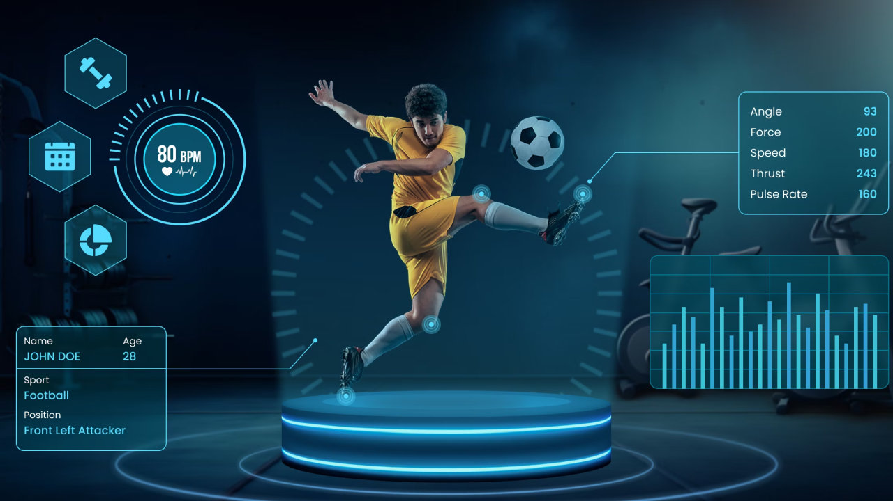
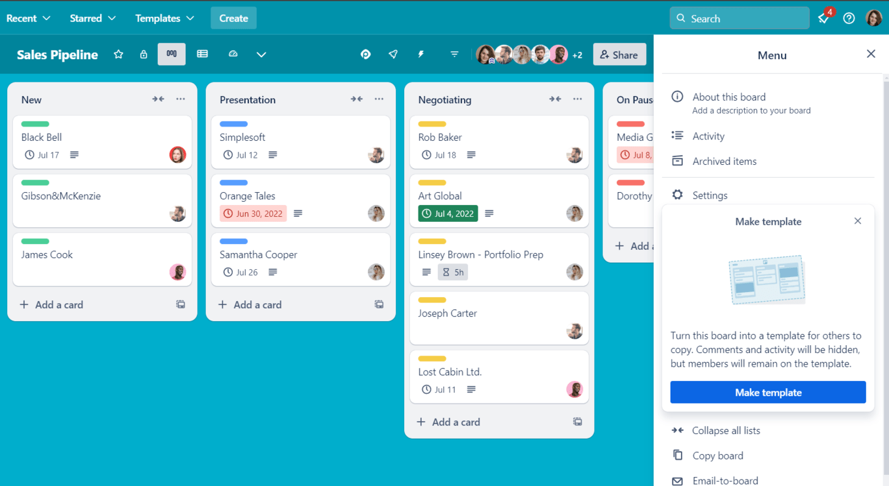

Tools: SQL Server, Excel
Collection of hands-on projects demonstrating core and advanced SQL analytics techniques, including data cleaning, joins, aggregations, window functions, time-series analysis, and customer analytics.
The project also showcases advanced Excel capabilities including pivot tables, lookup functions, statistical analysis, and reporting dashboards.

This section showcases end-to-end business intelligence solutions built to transform raw operational data into actionable insights.
These projects demonstrate expertise in data cleaning, modeling, KPI development, and dashboard design using tools like Power BI and Excel.
The dashboards enable stakeholders to monitor performance, identify trends, and support data-driven strategic decision-making across sales, operations, and customer analytics.
Analyzed 100,000+ Brazilian e-commerce transactions to uncover revenue trends, customer behavior, and product demand patterns.
Built an interactive Power BI executive dashboard analyzing regional sales performance, payment methods, product categories, and customer satisfaction.
Key insights revealed top-performing states, seasonal demand cycles, and product quality gaps affecting customer reviews.
Developed an automated analytics report to monitor sales performance for Q1 2025,
generating key revenue insights and operational KPIs from transactional sales data.
The project automated the extraction, transformation, and reporting process to produce a structured performance report for stakeholders.
Key Metrics Generated:
• Total Revenue: $797,621
• Total Orders: 1,000
• Average Order Value (AOV): $797.62
Key Analysis:
• Monthly Revenue Trend: Identified revenue performance patterns across the quarter.
• Revenue by Region: Highlighted geographic sales contribution and regional performance differences.
• Top Products by Revenue: Ranked highest-performing products to support inventory and sales strategy
Developed a full BI solution analyzing 25,000 global ride-sharing records.
The dashboard tracks revenue performance, driver productivity, ride demand, payment patterns, and customer retention.
Insights enabled recommendations for driver allocation, fleet optimization, and regional market expansion.
Analyzed Adidas retail transaction data to evaluate sales trends, profitability drivers, and product demand.
Built interactive dashboards tracking total sales, operating profit, product performance, and regional revenue contributions.
Provided recommendations for inventory planning, regional expansion, and pricing optimization.

Analyzed 3,900+ retail transactions to identify customer purchase behavior and product performance trends.
Developed KPI dashboards including Total Sales, Average Order Value, Repeat Purchase Rate, and Subscriber Revenue.
Delivered insights on top products, regional demand, and fulfillment performance.
These projects focus on understanding customer behavior, product performance, and user engagement patterns. Using SQL, Power BI, and statistical analysis,
the analyses explore customer segmentation, churn drivers, lifetime value, and user preferences.
The insights generated help businesses improve customer retention, optimize product offerings, and design targeted growth strategies.
Analyzed 10,000 customer records to identify drivers of customer churn and retention risk.
Developed a star-schema model and BI dashboards to analyze churn patterns by age, geography, and product usage.
Provided strategies to improve customer retention and lifetime value.

Built a customer analytics framework to calculate and predict customer lifetime value for a fintech platform.
Segmented users by engagement level, churn risk, and loyalty program participation.
Insights supported customer retention and revenue optimization strategies.
Analyzed survey data from 130 ride-hailing users across Pakistan to evaluate customer preferences, safety perception, and pricing sensitivity.
The dashboard identifies key user segments and platform adoption patterns across major ride-sharing apps.
This section highlights projects focused on financial performance analysis, SaaS metrics, and business unit economics.
The work includes calculating key financial KPIs such as MRR, ARR, CAC, LTV, revenue growth,
and variance analysis while building executive dashboards for leadership teams.
These projects demonstrate the ability to translate financial data into strategic insights for revenue optimization and operational planning.

Developed a GAAP-aligned SaaS financial analytics model tracking revenue growth, churn, retention, and unit economics.
Calculated advanced SaaS KPIs including:
• MRR / ARR
• Variance Rate
• CAC
• LTV
• ARPU / ARPPU
• Rule of 40
Designed executive dashboards supporting financial strategy and revenue forecasting.

Built a financial dashboard comparing Actual vs Budget performance across multiple entities and financial accounts.
Implemented advanced variance metrics and rolling financial KPIs to help stakeholders quickly identify performance gaps.
These projects demonstrate practical experience in data preparation, automation, and data pipeline development using Python and SQL.
The work includes data cleaning, feature engineering, web scraping, and transforming raw datasets into structured, BI-ready formats.
These processes form the foundation for reliable analytics and scalable reporting systems.
Tools:Python, Pandas, BeautifulSoup, Requests

Executed end-to-end data preparation pipelines, including:
• Cleaning messy customer datasets
• Removing duplicates and formatting records
• Scraping structured country data from Wikipedia
Produced BI-ready datasets for analytics platforms.
Performed data cleaning, feature engineering, and exploratory data analysis on laptop specifications and pricing data.
Built SQL queries to analyze hardware-price relationships and value-for-money scoring.
This section features projects that apply predictive modeling and statistical experimentation techniques to solve business and product problems.
Using Python and statistical methods, the projects include regression modeling, predictive analytics,
and A/B testing experiments to evaluate product changes and forecast outcomes.
Tools:Python, Pandas, NumPy, Matplotlib, Scikit-learn, RandomForest
Built machine learning regression models to predict housing prices using demographic and geographic features.
Compared Linear Regression and Random Forest models, achieving an R-Square of R² = 0.89.

Designed and analyzed an A/B experiment evaluating the conversion impact of a redesigned webpage.
Applied statistical tests including:
• Two-Proportion Z-Test
• Mann-Whitney U Test
• Chi-Square Test
Provided product recommendations based on statistically significant results.
These projects apply analytics to large-scale public and research datasets to uncover patterns related to health, infrastructure,
and socio-economic trends. Through SQL analysis, exploratory data analysis (EDA), and interactive dashboards,
the work highlights how data can support policy evaluation, research insights, and evidence-based decision-making.
Analyzed 1M+ global health records to study disease burden, healthcare access, and economic health impacts.
Built dashboards supporting public health planning and healthcare policy analysis.
Analyzed malaria incidence trends across African countries (2007-2017).
Developed dashboards evaluating disease prevalence, infrastructure impact, and prevention strategies.
This section contains deep-dive analytics case studies involving complex datasets and advanced data modeling.
The projects demonstrate expertise in building scalable data models, performing multi-dimensional analysis,
and delivering executive-level insights across industries such as gaming, digital platforms, and global markets.
Tools:Power Query, DAX, Data Modelling, Power BI

Analyzed $398M+ in global esports prize pool data across players, teams, and game genres.
Developed dashboards revealing market concentration risks, regional growth opportunities, and player earnings distribution.
These projects demonstrate how analytics can be delivered within Agile project management frameworks.
They include sprint-based workflows, backlog management, iterative analysis, and stakeholder reporting.
The focus is on delivering structured analytics solutions while maintaining collaboration, documentation, and rapid iteration cycles.
Tools:Excel (Advanced Functions), Power Query, Pivot Tables, Trello

Executed a full Agile analytics workflow, including sprint planning, backlog management, and stakeholder reporting.
Performed EDA on a 20,000-row e-commerce dataset, building a final dashboard for KPI tracking and performance insights.